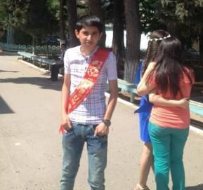
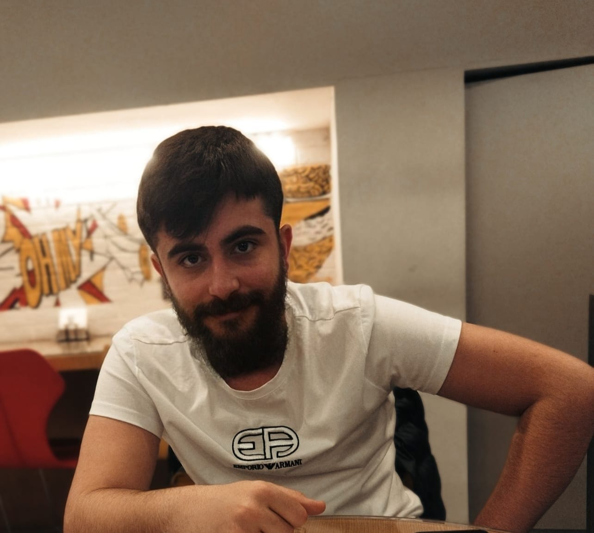
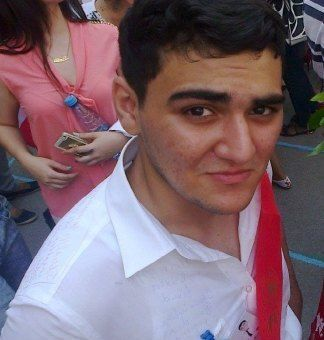
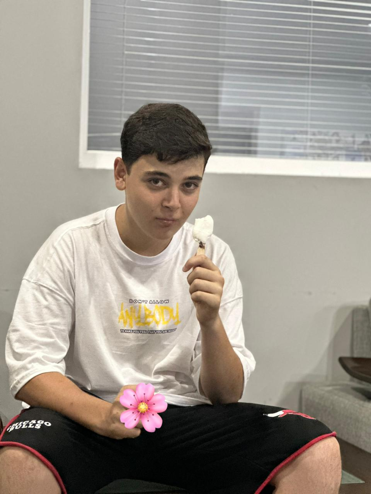

8 iyun tarixindən ümumi təhsil müəssisələrində “Yay məktəbi”nə qeydiyyat prosesinə start verilib. Ümumi təhsil müəssisələrində təşkil olunacaq yay məktəblərində iştirak etmək istəyən təhsilalanların valideynləri (və ya digər qanuni nümayəndəsi) qeyd edilən tarixdən başlayaraq ərizə ilə ümumi təhsil müəssisəsinin rəhbərliyinə müraciət edə bilərlər. “Yay məktəbi”ndə bütün ümumi təhsil müəssisələrinin I-X sinif şagirdləri ödənişsiz və könüllü əsaslarla iştirak edə bilərlər. I-IV siniflərdə tədris həftədə 5 dəfə gündəlik 4 saat olmaqla, V-X siniflərdə isə həftədə 5 dəfə gündəlik 3-4 saat olmaqla təşkil olunacaq. I-IV siniflərdə məşğələlər tədris dili, riyaziyyat, xarici dil fənləri üzrə keçiriləcək. V-X siniflərdə məşğələlər tədris dili, riyaziyyat, xarici dil fənləri və ümumi təhsil müəssisəsinin rəhbərliyinin qərarı ilə digər 3 fənnə veriləcək. Qeyd edək ki, “Yay məktəbi” şagirdlərin zəruri bilik və bacarıqlarının möhkəmləndirilməsi, öyrənilənlərin ümumiləşdirilməsi məqsədilə təşkil edilir. “Yay məktəbi” iyunun 16-dan 30-dək davam edəcək.
Nəbizadə Fatimeyi Zəhra 700 Bal
Eltun İbrahimov 800 Bal
Nurlan Quluzadə 700 Bal
Maho 44 bal
Məktəbdə Basketbol kursları başlamışdır 20 illik təcrübəyə sahib müəllim tərəfindən dərs keçiriləcəkdir maraqlanan şagirdlər valideyinlə birlikdə idman zalına yaxınlaşa bilər.
 Nicat Qasımov 700 Bal
Ramo 10 Bal